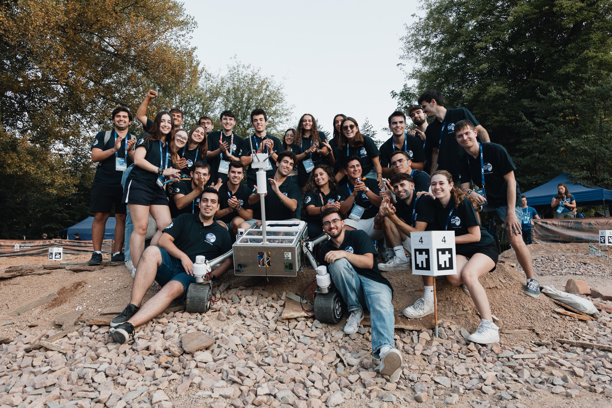
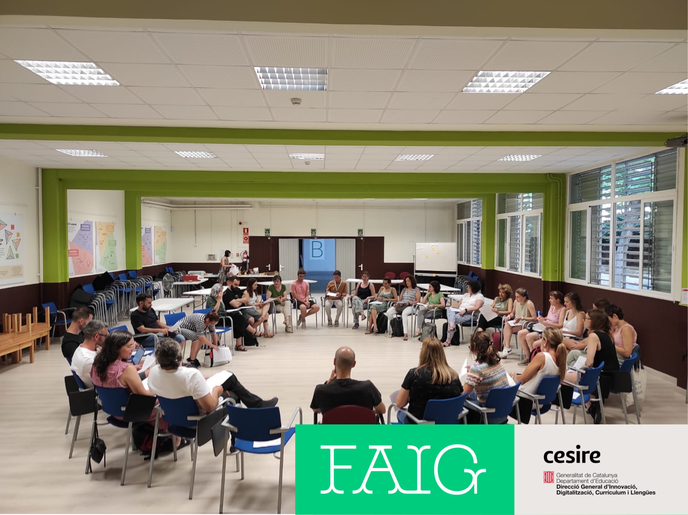

2025

HoPE + INFN + University of Ferrara 1st Hackathon
This year, I got to travel to Ferrara, Italy to help organize a hackathon at the University of Ferrara, in collaboration with INFN (The Italian Institute of Nuclear Physics), the MIT Edgerton Center and HoPE (Hands On Physics Experience, who are the main organizers and are a club at a school in ferrara called Liceo Scientifico A. Roiti). As with all hackathons, I got to mentor several groups and teach STEAM to high school students.
2025

MIT&CIC&UPC Hackathon 2025
For the forth year in a row, I helped organize and was a mentor for the 2025 Hackathon organized by the MIT Edgerton Center, Fundació CIC and the Polythecnic University of Catalonia. This event brought together 120 students from 11 schools to ideate, design and build a project they decide during the hackathon.
2024

European Rover Challenge 2024
For the second year in a row, I took place in the European Rover Challenge with my team UPC Space Program GRASS. Even though the results were not great, we did have a good competition where we were able to keep pushing and delivering in tasks even though we had some crazy complications, including short circuits and battery issues.
2024

MIT Engineering Design Workshop 2024
I got to take part as a Mentor in the MIT Edgerton Center Engineering Design Workshop 2024! An amazing program where High Schools students from all around the world get to build in groups something they're passionate about. Even though I helped with all the groups in some way, I spent most of the time with Furrari! A group that wanted to build a car for a cat, where the car would go wherever the cat was facing. They designed and built a small version of a car out of foam and sculpted it into a ferrari and together with some coding and electronics, it worked!
2024

UPC Teachers Hackathon 2024
This year, UPC hosted a hackathon for teachers where we introduced them to hands-on education by making them build their own projects. This resulted in a unique experience where teachers got to play student's roles and get into groups and build something they're passionate about.
2024

CIC Batxillerats TechProjects 2024
TechProjects is a class we teach to 12th graders where we introduce them to how to think like an engineer and the creative process to build a project by themselves. For example, the project in the photo is a Sensorial Cabin built by a group of 6 that could emulate certain emotions when going inside.
2024

Barcelona STEAM Conference Workshop
Together with the Edgerton Center, we organized a workshop for Teachers where we introduced them to the hackathons and what we do to create a maker community in Catalonia.
2024

Hackathon MIT&CIC 2024
I was part of the 2024 MIT&CIC Hackathon at UPC as a mentor for the third year in a row. This hackathon had 120 students from 11 schools around catalonia where they developed amazing projects like an all terrain vehicle, Tennis ball thrower, Wind tunnel, Ultrasonic levitation or an aerostatic balloon to name a few.
2023

Week of Engineering Competition Activity
As part of the Week of Engineering Competition organized by BESTUPC, we organized an activity about the robotic arm of our rover at GRASS. I helped to run the activity and solve the students' questions and doubts.
2023

GRASS Promotion to Head of Control Department
After the competition, I was promoted to head of a new department named Control, which aims to build the infrastructure to operate the rover both autonomously and remotely.
2023

HackKnights AI Challenge 2023
I was called by the organizer to help a group of students that where developing an AI tool to help predict heart attacks from patients. I helped them in several issues including the AI model not working well and resolving some bugs in the code. I was also called to give the initial presentation to AI for the students in case they couldn't find any local to do it.
2023

European Rover Challenge 2023
With the rest of my mates in the GRASS Rover project, which is run by students from UPC, we went to Poland, Kielce to compete in the European Rover challenge 2023, a competition organized by the European Space Agency to encourage students across the world to build and develop rovers.
2023

Harvard's CS50AI
During the second semester of my freshman year I took CS50AI, which explores the concepts and algorithms at the foundation of modern artificial intelligence, diving into the ideas that give rise to technologies like game-playing engines, handwriting recognition, and machine translation. Through hands-on projects, students gain exposure to the theory behind graph search algorithms, classification, optimization, reinforcement learning, and other topics in artificial intelligence and machine learning incorporating them into my own Python programs.
2023

CESIRE Hackathon For Teachers
This July I was invited to be part of a Hackathon for teachers in FAIG, an initiative run by the department of education of Catalonia to bring maker spaces into the classroom.
2023

Founding of Grapefruit
Together with a group of friends, we decided to start developing a videogame called Kegel in Unity. Every member of our team has a different skill set that helps with parts of the project, from designing the sprites to coding the enemies' AI.
2023

Hackathon MIT&CIC 2023
In January of 2023 I was part of the MIT&CIC Hackathon 2023 as a mentor.
I mentored different groups which included the building of a Light Saber by a group with no experience with arduinos and the building of a glove for rehabilitation.
2022

Harvard's CS50
During my first semester in college I decided to take Harvard's CS50 course and I completed it by December 2022.
This course gave me a solid coding basis and tought me about the fundamentals as until then I had learnt to code with my projects and had never taken any CS Course
2022

Joining GRASS Rover Club
In my second month of Collage I decided to join and was Accepted at the GRASS Rover Student Club at my University.
This Group is building a rover to compete at the European Rover Challenge and I'm part of the Coding Department of the Club.
2022

MIT Engineering Design Workshop 2022
The MIT Engineering Design Workshop 2022 was a month long EDW where people from around the world came together to build, design and prototype ideas at the Edgerton Center at MIT.
During this month long stay we got to do different fun activites related to engineering and to get to know each other, like building and launching Water Rockets, using a High Speed camera to take photos of ourselves popping water ballons.
The project that we built for that EDW was a foot piano, that had nine notes (A, B, C, D, E, F, F#, G) and that could be arranged in any way to play any song we wanted.
Our group consisted of Three Americans (Hrushi, Harri, Archim), two italians (Emilia & Clara) and two Spaniards (Oriol and me), so to overcome our language barriers also became a fun challenge.
2022

Shaking Hands Overseas Demo
After months of work we finally where able to move our robotic hand with a glove built by LucasVR, who is the creator of the Lucid Gloves, and who from 4-409 at MIT was able to move our hand from the other side of the world.
2022

Hackathon MIT&CIC 2022
This hackathon was my first one as a mentor instead of as a student. So instead of building and designing a project I mentored other students how to do it and give them advice or a new prespective.
2021

Engineering Design Workshop 2021
Every Summer, the MIT Edgerton Center organizes its Engineering Design Workshop for rising ninth through 12th grade students.
During the EDW 2021 we continued our project Shaking Hands Overseas and moved a finger of our robotic hand from the other side of the ocean.
This EDW we built our third and last prototype and designed all the infrastructure necessary to move the hand from any part of the world.
2021

Hackathon MIT&CIC 2021
During the 2021 Hackathon organized by Fundació CIC and The MIT Edgerton Center, we built and tested a robotic hand which could be moved from the other side of the word.
This project, called Shaking Hands Overseas was started during this Hackathon by Marti Vinyolas, Eduard Lleget and myself and took a little over 6 months to get it working.
During this hackathon we 3D printed and tested our first and second of three prototypes that we would eventually build.
2020

Hackathon MIT&CIC 2020
The 2020 Hackathon organized by Fundació CIC and The MIT Edgerton Center consisted on the building, prototyping and testing of our own ROV (Remote Operated Vehicle).
From the design to the wiring, we designed and built our own with help and advice from mentors from MIT, who where students at the time.
2019
Hackathon MIT&CIC 2019
The 2019 Hackathon was my first contact into engineering by the Edgerton Center, where I got to solve some fun puzzles and challenges with my friends.